はじめに
世の中にはさまざまな問題が山積していますが、スーパーコンピュータを使っても解くのに数十億年以上かかるような難しい問題があります。これは、厳密に解を求めようとすると、すべての場合について総当たりで調べるしか方法がなく、データ数が多くなると時間がべらぼうにかかるため、現実的な時間では解答を出すことができないというものです。
このような問題の代表に「巡回セールスマン問題」があります。
Ａ Ｂ
● ●
● ●
Ｅ Ｆ
● ●
Ｃ Ｄ
都市の配置
Ａ Ｂ Ａ Ｂ
●───────● ●───────●
│ │ ＼ ／
│ ●───● │ ● ●
│／Ｅ Ｆ＼│ ／Ｅ Ｆ＼
● ● ●───────●
Ｃ Ｄ Ｃ Ｄ
（１） （２）
図 : 巡回セールスマン問題
セールスマンが訪問すべき都市が上図のように散らばっているとします。セールスマンは各都市を 1 回ずつもれなく訪問して帰ってこなくてはなりません。このとき、一番短い巡路（全ての都市を含む単純な閉路）を見つけるのが「巡回セールスマン問題 (Traveling Salesperson Problem : TSP) 」です。巡路の長さは自由に定義してもかまいません。たとえば、時間であったり料金であってもいいのですが、今回はオーソドックスに「距離」と定義することにしましょう。
出発点を A とすると、(1) の巡路は A - B - D - F - E - C - A となり、(2) の場合は A - B - F - D - C - E - A となります。つまり、巡路は A から始まる順列を求めればよいわけです。都市の個数は 6 つあるので、巡路の総数は (6 - 1)! = 120 通り (円順列と同じ) しかありません。逆回りの経路を省くと 120 / 2 = 60 通り (じゅず順列と同じ) になります。これならば深さ優先探索で簡単に答えを求めることができます。
ところが、都市の個数が多くなると簡単ではありません。n 個の都市の場合は (n - 1)! / 2 個の巡路を調べなくてはいけません。この「階乗」を甘く見ると痛い目にあうのです。巡路の総数が n の階乗に比例して増えるというのは、まさに爆発的に増えるのです。
ｎ | ｎ2 | ２n | ｎ！ ----+-----+--------+-------------------- 1 | 1 | 2 | 1 2 | 4 | 4 | 2 3 | 9 | 8 | 6 4 | 16 | 16 | 24 5 | 25 | 32 | 120 6 | 36 | 64 | 720 7 | 49 | 128 | 5040 8 | 64 | 256 | 40320 9 | 81 | 512 | 362880 10 | 100 | 1024 | 3628800 ・ | ・ | ・ | ・・・ 15 | 225 | 32768 | 1307674368000 ・ | ・ | ・ | ・・・・・ 20 | 400 |1048576 |2432902008176640000
上の表を見てください。データの個数 n が増えると、n! が爆発的に増加することがよくわかると思います。以前ソートアルゴリズムを取り上げましたが、遅いといわれるバブルソートでさえ、データ数の 2 乗に比例する処理時間で済むのです。「巡回セールスマン問題」を厳密に解くことがいかに難しいか、おわかりいただけると思います。
TSP の厳密解を求めるのが困難であれば、近似解で妥協することになります。たとえば、荷物を配送するときの最短経路を求めるとか、プリント配線でボードに穴を空けるときの最適順序を求めるなど、幅広い分野で TSP を応用することができます。このような場合、厳密な最短巡路でなくても十分短い巡路であれば満足できるので、近似解を求めるアルゴリズムもたくさん発表されています。今回は簡単な「欲張り法」に基づく TSP の解法を取り上げることにします。
●TSP を「総当たり」で解く
数が増えるとべらぼうに時間がかかる、といわれても実感がわかないと思います。そこで、最初に厳密解を求めるプログラムを作って確かめてみましょう。都市の個数が少なければ、「深さ優先探索」で簡単に求めることができます。
●データの入力
データは標準入力より読み込みます。データファイルの形式は、x 座標と y 座標を順番に並べただけの単純なテキストファイルです。求めた巡路は Python / Tkinter を使ってグラフィックで表示することにします。
プログラムは次のようになります。
リスト : 標準入力よりデータを読み込む
def read_data():
buff = []
for a in sys.stdin:
b = a.split()
buff.append((int(b[0]), int(b[1])))
return buff
データは 1 行にひとつの座標、たとえば 100 200 のように記述します。for ループで標準入力から 1 行ずつ読み込み、x 座標と y 座標を split で分解します。それを int で整数値に変換し、タプルにまとめて buff に格納します。
リスト : 距離の計算
def distance(ps):
size = len(ps)
table = [[0] * size for _ in xrange(size)]
for i in xrange(size):
for j in xrange(size):
if i != j:
dx = ps[i][0] - ps[j][0]
dy = ps[i][1] - ps[j][1]
table[i][j] = math.sqrt(dx * dx + dy * dy)
return table
関数 distance は都市間の距離を計算して配列に格納します。
リスト : 経路の距離を求める
def path_length(path):
global distance_table
n = 0
i = 1
for i in xrange(1, len(path)):
n += distance_table[path[i - 1]][path[i]]
n += distance_table[path[0]][path[-1]]
return n
関数 path_length は求めた経路の距離を計算します。distance_table は大域変数で、関数 distance の結果を格納するものとします。
●円順列とじゅず順列
円順列は順列の要素を円形に並べ、それを回転してできる並び方を同じ順列として扱うものです。たとえば、[1, 2, 3, 4] の順列は 24 通りあります。配列の末尾と先頭をつなげて [1, 2, 3, 4] を回転すると、[2, 3, 4, 1], [3, 4, 1, 2], [4, 1, 2, 3] という並び方ができます。これを [1, 2. 3. 4] と同じものと考えるのが円順列です。したがって、[1, 2, 3, 4] の円順列は、次に示すように (4 - 1)! = 6 通りになります。
[1, 2, 3, 4] [1, 2, 4, 3] [1, 3, 2, 4] [1, 3, 4, 2] [1, 4, 2, 3] [1, 4, 3, 2]
円順列の中で、逆回転すると同じ並びになるものがあります。たとえば、[1, 2, 3, 4] において、先頭の左隣を末尾として逆に並べると [1, 4, 3, 2] となります。つまり、円形に並んだ要素を裏返しにすると考えてください。これを同じ並び方とするのが「じゅず順列」です。したがって、[1, 2, 3, 4] のじゅず順列は次に示すように (4 - 1)! / 2 = 3 通りになります。
[1, 2, 3, 4] [1, 2, 4, 3] [1, 3, 2, 4]
じゅず順列を生成するプログラムは簡単です。次のリストを見てください。
リスト : じゅず順列の生成
def perm(m):
def perm_sub(n, a):
if n == m:
print a
else:
for x in xrange(2, m + 1):
if x not in a:
if n != 2 or a[0] > x:
a.append(x)
perm_sub(n + 1, a)
a.pop()
#
for x in xrange(2, m + 1):
perm_sub(2, [x, 1])
じゅず順列を生成するプログラムが間違っていました。修正するとともにお詫び申しあげます。
関数 perm は 1 から m までの整数値のじゅず順列を出力します。実際の処理は局所関数 perm_sub で行います。引数 n は選択した数字の個数、引数 a が数字を格納する配列です。先頭要素を 1 に固定すると、円順列を生成することができます。じゅず順列の場合、2 番目の要素と最後尾の要素の大小関係をチェックすることで、鏡像解を排除することができます。プログラムではこれを早い段階でチェックするため、a[0] をじゅず順列の最後尾の要素、a[1] を 1 に固定し、a[2] にセットする数字 x を選ぶとき、条件 a[0] > x を満たしていることを確認しています。
簡単な実行例を示しましょう。perm(5) の実行結果は次のようになります。
[3, 1, 2, 4, 5] [3, 1, 2, 5, 4] [4, 1, 2, 3, 5] [4, 1, 2, 5, 3] [4, 1, 3, 2, 5] [4, 1, 3, 5, 2] [5, 1, 2, 3, 4] [5, 1, 2, 4, 3] [5, 1, 3, 2, 4] [5, 1, 3, 4, 2] [5, 1, 4, 2, 3] [5, 1, 4, 3, 2]
●深さ優先探索で解く
それでは、深さ優先探索で最短経路を探す関数 dfs を作りましょう。
リスト : 単純な深さ優先探索による解法
def dfs(size):
def dfs_sub(n, path):
global min_length, min_path
if size == n:
new_len = path_length(path)
if new_len < min_length:
min_length = new_len
min_path = path[:]
else:
for x in xrange(1, size):
if x not in path:
if n != 2 or path[0] > x:
path.append(x)
dfs_sub(n + 1, path)
path.pop()
#
global min_length, min_path
min_length = 1e100
min_path = []
for x in xrange(1, size):
dfs_sub(2, [x, 0])
基本的な考え方はじゅず順列を生成する関数 perm と同じです。大域変数 min_length に経路の距離を、min_path に最短経路を保持します。min_length は巨大な値で初期化しておきます。経路がひとつ完成したら、path_length で経路の距離を計算して変数 new_len にセットします。new_len が min_length よりも短い場合は min_length を new_len に、min_path を path に書き換えます。
あとのプログラムは簡単なので説明は割愛します。詳細は プログラムリスト１ をお読みください。
●実行結果
それでは実行してみましょう。次に示す 4 種類のテストデータを用意しました。
20 20 20 20 20 20 20 20
120 20 120 20 120 20 120 20
220 20 220 20 220 20 220 20
70 120 70 120 320 20 320 20
170 120 170 120 70 120 70 120
270 120 270 120 170 120 170 120
20 220 20 220 270 120 270 120
120 220 120 220 20 220 370 120
220 220 120 220 20 220
220 220 120 220
220 220
data0.txt data1.txt data2.txt data3.txt
図 : テストデータ
都市の個数は 8 個から 11 個あります。結果は次のようになりました。
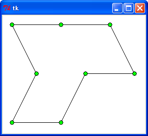
C>python tsp0.py < data0.txt 847.2135955 (距離) 0.0357673950181 (実行時間 : 秒)
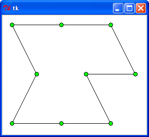
C>python tsp0.py < data1.txt 947.2135955 0.313559963627
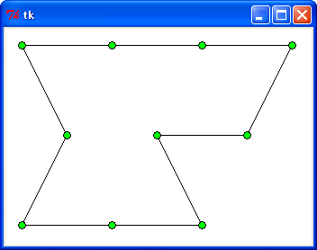
C>python tsp0.py < data2.txt 1047.2135955 3.13831283026
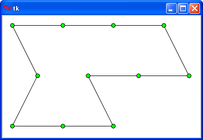
C>python tsp0.py < data3.txt 1147.2135955 34.3837814583
: 距離 : 時間 (秒)
----------+--------+----------
data0.txt : 847.2 : 0.035
data1.txt : 947.2 : 0.31
data2.txt : 1047.2 : 3.13
data3.txt : 1147.2 : 34.38
実行環境は Windows XP, celeron 1.40 GHz, Python 2.7 です。都市の個数がひとつ増えただけで、処理時間が急激に増加していることがわかります。
●TSP を「欲張り法」で解く
次は「欲張り法」で TSP を解いてみましょう。最も単純な欲張り法は、出発点から順番に最も近い都市を選んでいく方法です。
Ａ●←──────●Ｆ
│ ↑
↓ │
Ｂ● ●Ｅ
│ ↑
↓ │
Ｃ●──────→●Ｄ
巡路：A - B - C - D - E - F - A
図 : 単純な欲張り法による巡路の形成
上図のように都市が配置されているとします。このとき出発点を A とすると、次は A にいちばん近い都市 B を訪問します。その次は B にいちばん近い都市 C を訪問します。このように、現在地点から最も近くにある都市を選択していきます。つまり「最短距離にある都市」から選んでいくところが「欲張り」というわけです。上図の場合では、これが最も短い巡路であり、たまたま欲張り法でも最適解となりましたが、いつもうまくいくとはかぎらないことに注意してください。
このアルゴリズムのポイントは、未訪問の都市の中から最短距離にある都市を選択するところです。未訪問の都市を区別するため、訪れた都市にフラグを立ててもよいのですが、その場合はフラグのチェックが必要になります。そこで、今回は配列内のデータを移動することで、訪問済みと未訪問の都市を区別することにします。
● ↓
０ １ ２ ３ ４ ５ ６ ７
Ａ Ｂ Ｃ Ｄ Ｅ Ｆ Ｇ Ｈ
│ │
│←─────────→│
Ａに一番近い都市を選ぶ
●
０ １ ２ ３ ４ ５ ６ ７
Ａ Ｂ Ｃ Ｄ Ｅ Ｆ Ｇ Ｈ
↑ ↑
└─────┘
交換する
● ●
０ １ ２ ３ ４ ５ ６ ７
Ａ Ｅ Ｃ Ｄ Ｂ Ｆ Ｇ Ｈ
│ │
│←───────→│
Ｅに一番近い都市を選ぶ
図 : 単純な欲張り法による TSP の解法
上図に示すように、最初 8 つの都市が配列に格納されています。出発点を A とすると、次に訪問する都市は残りの都市（1 から 7 に格納されている都市）の中から A にいちばん近い都市を選びます。これが E であったとしましょう。この E を A の次の位置にある都市 B と交換します。すると、0 と 1 にある都市 A と E は訪問済みで、そのほかの都市が未訪問と簡単に区別することができます。
今度は E にいちばん近い都市を 2 から 7 に格納されている都市の中から選び、それを 2 の位置にある都市と交換すればいいわけです。最後には、配列内は訪問した順番に都市が並ぶことになります。
それではプログラムを作りましょう。次のリストを見てください。
リスト : 単純な欲張り法
def greedy0(size):
global distance_table
path = range(size)
for i in xrange(size - 1):
min_len = 1000000
min_pos = 0
for j in xrange(i + 1, size):
len = distance_table[path[i]][path[j]]
if len < min_len:
min_len = len
min_pos = j
path[i + 1], path[min_pos] = path[min_pos], path[i + 1]
return path
変数 path に経路を格納します。最初は 0 から size - 1 までの整数で初期化します。二重の for ループで、i 番目の都市に最も近い都市を i + 1 番目以降の都市の中から探します。min_pos が距離最小の都市、min_len がその距離を表します。min_len は巨大な数値で初期化します。2 番目の for ループが終了したとき、min_pos と min_len には最も近い都市とその距離がセットされています。path の i + 1 番目の要素と min_pos 番目の要素を交換します。最後に path を return で返します。
あとのプログラムは簡単なので説明は割愛します。詳細は プログラムリスト２ をお読みください。
●実行結果 (2)
それでは実行してみましょう。結果は次のようになりました。
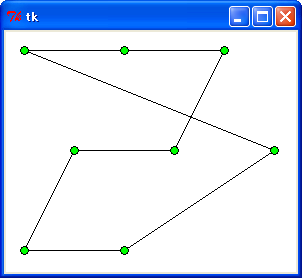
C>python tsp1.py < data0.txt 1073.14260188 (距離) 0.000439441325643 (実行時間 : 秒)
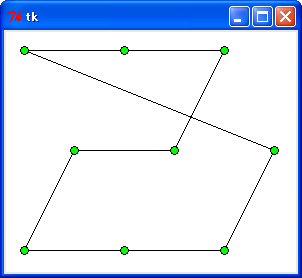
C>python tsp1.py < data1.txt 1104.66843698 0.000425752435016
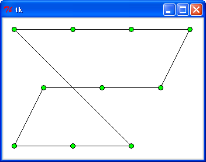
C>python tsp1.py < data2.txt 1206.44951022 0.00043636830938
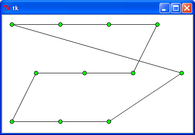
C>python tsp1.py < data3.txt 1467.88985599 0.000441117516332
: TSP0 : TSP1
----------+--------+--------
data0.txt : 847.2 : 1073.1
data1.txt : 947.2 : 1104.7
data2.txt : 1047.2 : 1206.4
data3.txt : 1147.2 : 1467.9
----------+--------+--------
合計 : 3988.8 : 4852.1
処理時間は圧倒的に速いのですが、巡路は二割から三割ほど長くなっています。また、単純な欲張り法には大きな欠点があります。
単純な欲張り法では、同じ距離にある都市が複数ある場合、最初に見つけた都市を選択するので、その性能はデータの並びに大きく左右されるのです。たとえば、都市の座標を格納している point_table を、次のように x 座標を基準に降順でソートします。
point_table.sort(lambda x, y: y[0] - x[0])
都市の位置はまったく同じでデータの順番が異なっているだけですが、まったく異なる巡路が出力されます。
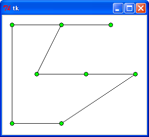
C>python tsp1.py < data0.txt 1092.08096265 0.000422679418753
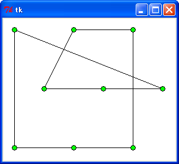
C>python tsp1.py < data1.txt 1281.06163923 0.000427987355935

C>python tsp1.py < data2.txt 1284.1619253 0.000452571486041
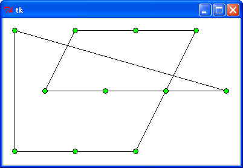
C>python tsp1.py < data3.txt 1599.41569109 0.000439720690758
: TSP0 : TSP1 : ソート
----------+--------+--------+--------
data0.txt : 847.2 : 1073.1 : 1092.1
data1.txt : 947.2 : 1104.7 : 1281.1
data2.txt : 1047.2 : 1206.4 : 1284.2
data3.txt : 1147.2 : 1467.9 : 1599.4
----------+--------+--------+--------
合計 : 3988.8 : 4852.1 : 5256.8
今回のテストでは、どのデータでもソートすると巡路は長くなりました。なお、データの並び方によっては、短い巡路が出力されることもあります。興味のある方はいろいろ試してみてください。
そこで、欲張り法による TSP の解法をもうひとつ作ってみましょう。単純な欲張り法では、現在地点から最も近い都市を選びましたが、今度は都市間の距離に注目します。つまり、距離の短い辺から選んで巡路を構成することにします。これは「クラスカルのアルゴリズム」を変形すると簡単に作ることができます。
●クラスカルのアルゴリズムの変形版で解く
「クラスカルのアルゴリズム」は拙作のページ 欲張り法 (2) で詳しく説明しました。基本的な考え方は、辺がひとつもない状態から始めて、低コストの辺を 1 本ずつ追加していくことで、コスト最小の展張木 (MST) を構成するというもので、コストの小さい辺から加えていくところが「欲張り」というわけです。
TSP の解法に応用する場合も距離の小さい辺を 1 本ずつ追加していくのですが、このとき、次の 2 点について注意する必要があります。
- ひとつの都市に 3 つ以上の辺が接続されないこと。
- 最後の都市から出発点に戻る場合を除き、途中で閉路ができないこと。
MST を構成する場合、ひとつの節点に 3 つ以上の辺が接続されることもありますが、TSP の場合は「各都市を 1 回ずつもれなく訪問する」という条件により、都市には 2 つの辺しか接続されません。また、MST は閉路を形成しないように構成しますが、TSP の場合は最後の辺を接続することで巡路（閉路）が構成されなければなりません。
具体的には、次のように考えます。
Ａ●──●Ｂ Ａ●──●Ｂ Ａ●──●Ｂ Ａ●──●Ｂ
│ ＼ │ ／│
│ ＼│ ／ │
Ｃ● ●Ｄ Ｃ● ●Ｄ Ｃ● ●Ｄ Ｃ● ●Ｄ
（１） （２） （３） （４）
図 : 辺の選択
たとえば、上図 (1) のように辺 A - B を選んだとします。これをひとつのグループとして管理します。これは Union-Find を使うと簡単です。最初、都市はお互いに素な集合で、辺を選んだときに両端の都市が属する集合をメソッド find で求めます。異なる集合であれば、その辺を選択してメソッド union で 2 つの集合を併合します。同じ集合ならば閉路を形成するので、その辺は選択しません。
たとえば、(2) で辺 B - D を選ぶ場合、AB と D は異なる集合なので、辺 B - D を追加することができます。そして、D を AB と同じ集合に併合にします。次に、(3) のように辺 A - D を追加しようとした場合、A と D は同じ集合に属しているので、この辺を追加することはできません。
ここまでは MST の場合と同じです。このほかに、TSP の場合は都市に接続される辺の数をチェックする必要があります。たとえば (4) のように、辺 B - C を追加すると都市Ｂに辺が 3 つ接続するので、この辺を追加することはできません。これは、都市に接続された辺の数を記憶しておけば簡単にチェックすることができます。
それではプログラムを作りましょう。最初に辺のデータを作成する関数 make_edge を作ります。
リスト : 辺のデータを作成する
# 辺の定義
class Edge:
def __init__(self, p1, p2, weight):
self.p1 = p1
self.p2 = p2
self.weight = weight
def __cmp__(x, y):
return x.weight - y.weight
# 辺のデータを作成
def make_edge(size):
global distance_table
edges = PQueue()
for i in xrange(0, size - 1):
for j in xrange(i + 1, size):
e = Edge(i, j, distance_table[i][j])
edges.push(e)
return edges
辺を作成する場合、たとえば A - B というデータを作ったならば、B - A というデータは同じなので作る必要はありません。したがって、二重の for ループで変数 i と j を辺の両端とすると、i に対して j は i + 1 から最後の都市までの辺を作成するだけになります。生成した辺はヒープ (プライオリティキュー) にセットします。ヒープは拙作のページ 二分木とヒープ で作成したものです。
次は経路を生成する関数 greedy1 を作ります。
リスト : 経路の生成
def greedy1(size, edges):
edge_count = [0] * size
u = UnionFind(size)
i = 0
select_edge = []
while i < size:
e = edges.pop()
if edge_count[e.p1] < 2 and edge_count[e.p2] < 2 and (u.find(e.p1) != u.find(e.p2) or i == size - 1):
u.union(e.p1, e.p2)
edge_count[e.p1] += 1
edge_count[e.p2] += 1
select_edge.append(e)
i += 1
return select_edge
edge_count は都市に接続された辺の個数を管理する配列です。次に UnionFind で素集合を生成して変数 u にセットします。select_edge は選択した辺を格納する配列です。次の while ループで、ヒープ edges からメソッド pop で最小距離の辺を求めて変数 e にセットします。
辺を追加する場合、辺の両端にある都市 e.p1 と e.p2 に接続されている辺の数が 2 未満であること、e.p1 と e.p2 が属する集合が異なることを確認します。ただし、最後の辺を追加する場合、両端の都市は同じ集合に属しているので、u.find() の返り値が同じでも、i が size - 1 と等しければ辺を追加することにします。あとは u.union() で e.p1 と e.p2 の集合を併合し、edge_count の値を +1 して、辺 e を select_edge に追加します。
あとのプログラムは簡単なので説明は割愛します。詳細は プログラムリスト３ をお読みください。
●実行結果 (3)
それでは実行してみましょう。結果は次のようになりました。
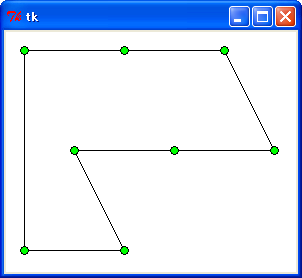
C>python tsp2.py < data0.txt 923.60679775 0.0118749729365
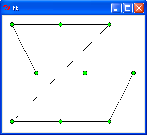
C>python tsp2.py < data1.txt 1106.44951022 0.00214580344709
C>python tsp2.py < data2.txt 1206.44951022 0.00443799421435
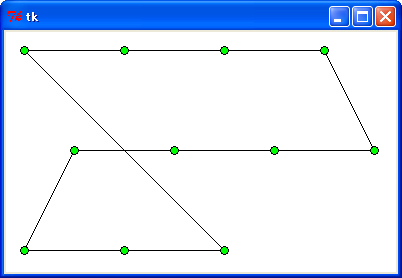
C>python tsp2.py < data3.txt 1306.44951022 0.0050565085786
: TSP0 : TSP1 : TSP2 : ソート
----------+--------+--------+--------+--------
data0.txt : 847.2 : 1073.1 : 923.6 : 947.2
data1.txt : 947.2 : 1104.7 : 1106.4 : 1106.4
data2.txt : 1047.2 : 1206.4 : 1206.4 : 1284.2
data3.txt : 1147.2 : 1467.9 : 1306.4 : 1306.4
----------+--------+--------+--------+--------
合計 : 3988.8 : 4852.1 : 4542.8 : 4644.2
単純な欲張り法 (TSP0) よりも距離が短くなる場合もありますし、長くなる場合もありますが、合計では TSP1 よりも短くなりました。x 座標を基準に降順でソートしたところ、距離が長くなる場合もありますが、変化しない場合もあります。単純な欲張り法に比べ、データの並び方の影響は少ないようです。
次は、都市の個数を 49, 64, 81, 100 と増やして試してみましょう。結果は次のようになりました。
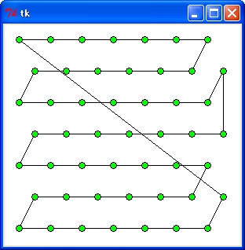
C>python tsp1.py < data49.txt 2321.07390619 0.000968000122921

C>python tsp2.py < data49.txt 2313.70615039 0.113407709639
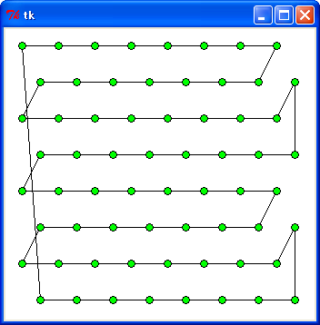
C>python tsp1.py < data64.txt 2913.7628938 0.00129541603751
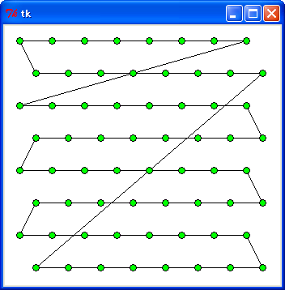
C>python tsp2.py < data64.txt 3168.31433116 0.208864255094
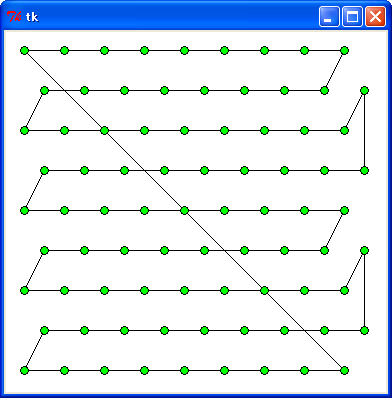
C>python tsp1.py < data81.txt 3770.31921636 0.00185023515559
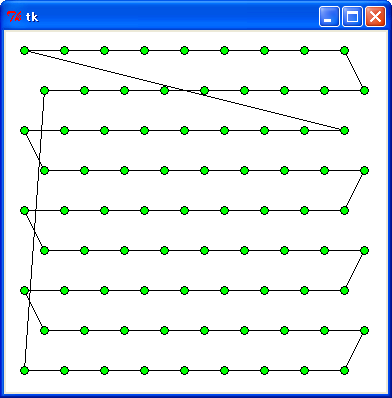
C>python tsp2.py < data81.txt 3803.61134385 0.349903130146
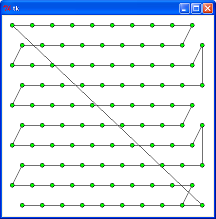
C>python tsp1.py < data100.txt 4925.94232908 0.00240728919458
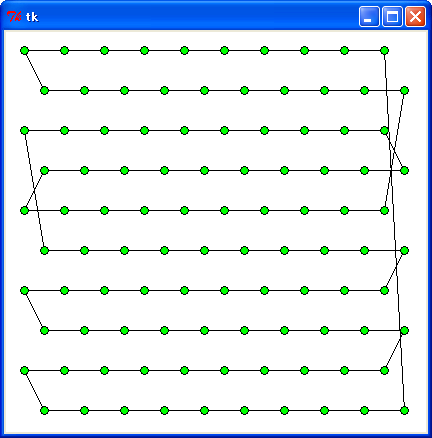
C>python tsp2.py < data100.txt 4516.91514561 0.564494090729
: TSP1 | TSP2
------------+---------+---------
data49.txt : 2321.1 : 2313.7
data64.txt : 2913.8 : 3168.3
data91.txt : 3770.3 : 3803.6
data100.txt : 4925.9 : 4516.9
------------+---------+---------
合計 | 13931.1 : 13802.5
乱数で適当に作成したデータの場合、結果は次のようになりました。
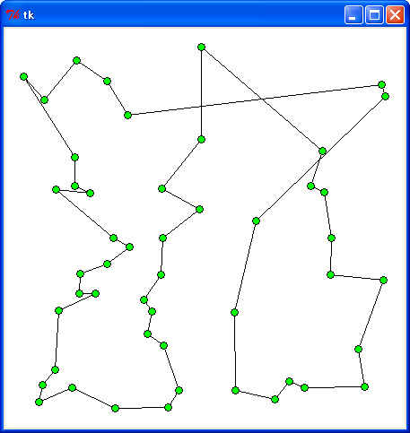
C>python tsp1.py < r49.txt 2731.37349208 0.000808762007462

C>python tsp2.py < r49.txt 2866.4258799 0.143233008665
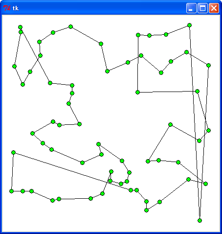
C>python tsp1.py < r64.txt 3619.73566911 0.00114846998711
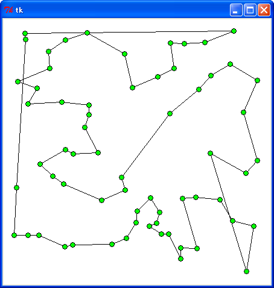
C>python tsp2.py < r64.txt 3252.42661437 0.193561472198
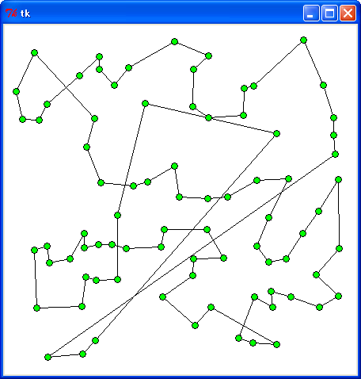
C>python tsp1.py < r81.txt 4072.61149575 0.00165803195658
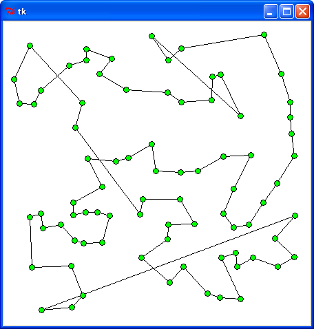
C>python tsp2.py < r81.txt 3655.27075805 0.349947828565
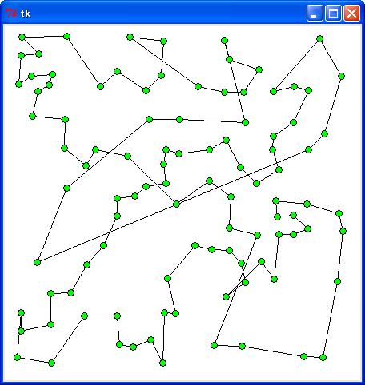
C>python tsp1.py < r100.txt 4389.54731468 0.00253272413114
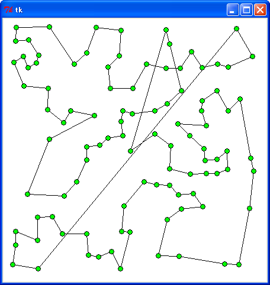
C>python tsp2.py < r100.txt 4279.19964618 0.578655667131
: TSP1 | TSP2
---------+---------+---------
r49.txt : 2731.4 : 2866.4
r64.txt : 3619.7 : 3252.4
r91.txt : 4072.6 : 3655.3
r100.txt : 4389.5 : 4279.2
---------+---------+---------
合計 : 14813.2 : 14053.3
今回のテストで距離を比較する限り、どちらの方法が優れているか明確な差は出なかったようです。距離の合計をみると、規則的なデータでは TSP1 は TSP2 よりも 0.93 % 長くなり、ランダムデータデーは TSP1 のほうが 5.4 % 長くなりました。TSP1 よりも TSP2 の法がランダムデータに少しだけ強いようです。
はっきりわかるのは、「クラスカルのアルゴリズムの変形版」を用いた方法は「単純な欲張り法」よりも時間がかかることです。都市の個数が多くなると、この方法で TSP を解くのは難しくなると思われます。
今回はここまでです。次回は「分割統治法」で TSP の近似解を求めてみましょう。
●参考文献
- A.V. Aho, J.E. Hopcroft, J.D. Ullman, 『データ構造とアルゴリズム』, 培風館, 1987
- 奥村晴彦, 『Ｃ言語による最新アルゴリズム事典』, 技術評論社, 1991
- 松田晋, 『実践アルゴリズム戦略 解法のテクニック <第 7 回> 巡回セールスマン問題の分割統治解法』, C MAGAZINE 1992 年 11 月号, ソフトバンク
- 松田晋, 『実践アルゴリズム戦略 解法のテクニック <第 14 回> 強欲戦略(2)』, C MAGAZINE 1993 年 6 月号, ソフトバンク
●プログラムリスト１
# coding: utf-8
#
# tsp0.py : 巡回セールスマン問題 (深さ優先探索)
#
# Copyright (C) 2012 Makoto Hiroi
#
import sys
import math
import time
from Tkinter import *
# 標準入力よりデータを読み込む
def read_data():
buff = []
for a in sys.stdin:
b = a.split()
buff.append((int(b[0]), int(b[1])))
return buff
# 距離をセット
def distance(ps):
size = len(ps)
table = [[0] * size for _ in xrange(size)]
for i in xrange(size):
for j in xrange(size):
if i != j:
dx = ps[i][0] - ps[j][0]
dy = ps[i][1] - ps[j][1]
table[i][j] = math.sqrt(dx * dx + dy * dy)
return table
# 経路の距離を求める
def path_length(path):
global distance_table
n = 0
i = 1
for i in xrange(1, len(path)):
n += distance_table[path[i - 1]][path[i]]
n += distance_table[path[0]][path[-1]]
return n
# 単純な深さ優先探索
def dfs(size):
def dfs_sub(n, path):
global min_length, min_path
if size == n:
new_len = path_length(path)
if new_len < min_length:
min_length = new_len
min_path = path[:]
else:
for x in xrange(1, size):
if x not in path:
if n != 2 or path[0] > x:
path.append(x)
dfs_sub(n + 1, path)
path.pop()
#
global min_length, min_path
min_length = 1e100
min_path = []
for x in xrange(1, size):
dfs_sub(2, [x, 0])
# データ入力と大域変数の初期化
point_table = read_data()
distance_table = distance(point_table)
s = time.clock()
dfs(len(point_table))
print min_length
print time.clock() - s
# 経路の表示
def draw_path(path):
x0, y0 = path[0]
for i in xrange(1, len(path)):
x1, y1 = path[i]
c0.create_line(x0, y0, x1, y1)
x0, y0 = x1, y1
c0.create_line(x0, y0, path[0][0], path[0][1])
for x, y in path:
c0.create_oval(x - 4, y - 4, x + 4, y + 4, fill = "green")
max_x = max(map(lambda x: x[0], point_table)) + 20
max_y = max(map(lambda x: x[1], point_table)) + 20
root = Tk()
c0 = Canvas(root, width = max_x, height = max_y, bg = "white")
c0.pack()
draw_path(map(lambda x: point_table[x], min_path))
root.mainloop()
●プログラムリスト２
# coding: utf-8
#
# tsp1.py : 巡回セールスマン問題 (単純な欲張り法)
#
# Copyright (C) 2012 Makoto Hiroi
#
import sys
import math
import time
from Tkinter import *
# 標準入力よりデータを読み込む
def read_data():
buff = []
for a in sys.stdin:
b = a.split()
buff.append((int(b[0]), int(b[1])))
return buff
# 距離の計算
def distance(ps):
size = len(ps)
table = [[0] * size for _ in xrange(size)]
for i in xrange(size):
for j in xrange(size):
if i != j:
dx = ps[i][0] - ps[j][0]
dy = ps[i][1] - ps[j][1]
table[i][j] = math.sqrt(dx * dx + dy * dy)
return table
# 単純な欲張り法
def greedy0(size):
global distance_table
path = range(size)
for i in xrange(size - 1):
min_len = 1000000
min_pos = 0
for j in xrange(i + 1, size):
len = distance_table[path[i]][path[j]]
if len < min_len:
min_len = len
min_pos = j
path[i + 1], path[min_pos] = path[min_pos], path[i + 1]
return path
# 経路の長さ
def path_length(path):
global distance_table
n = 0
i = 1
for i in xrange(1, len(path)):
n += distance_table[path[i - 1]][path[i]]
n += distance_table[path[0]][path[-1]]
return n
# データの入力
point_table = read_data()
point_size = len(point_table)
distance_table = distance(point_table)
s = time.clock()
path = greedy0(point_size)
print path_length(path)
print time.clock() - s
# 経路の表示
def draw_path(path):
x0, y0 = path[0]
for i in xrange(1, len(path)):
x1, y1 = path[i]
c0.create_line(x0, y0, x1, y1)
x0, y0 = x1, y1
c0.create_line(x0, y0, path[0][0], path[0][1])
for x, y in path:
c0.create_oval(x - 4, y - 4, x + 4, y + 4, fill = "green")
max_x = max(map(lambda x: x[0], point_table)) + 20
max_y = max(map(lambda x: x[1], point_table)) + 20
root = Tk()
c0 = Canvas(root, width = max_x, height = max_y, bg = "white")
c0.pack()
draw_path(map(lambda x: point_table[x], path))
root.mainloop()
●プログラムリスト３
# coding: utf-8
#
# tsp2.py : 巡回セールスマン問題 (クラスカルのアルゴリズムの変形版)
#
# Copyright (C) 2012 Makoto Hiroi
#
import sys
import math
import time
from pqueue import *
from unionfind import *
from Tkinter import *
# 標準入力よりデータを読み込む
def read_data():
buff = []
for a in sys.stdin:
b = a.split()
buff.append((int(b[0]), int(b[1])))
return buff
# 距離の計算
def distance(ps):
size = len(ps)
table = [[0] * size for _ in xrange(size)]
for i in xrange(size):
for j in xrange(size):
if i != j:
dx = ps[i][0] - ps[j][0]
dy = ps[i][1] - ps[j][1]
table[i][j] = math.sqrt(dx * dx + dy * dy)
return table
# クラスカルのアルゴリズムの応用
# 辺の定義
class Edge:
def __init__(self, p1, p2, weight):
self.p1 = p1
self.p2 = p2
self.weight = weight
def __cmp__(x, y):
return x.weight - y.weight
# 辺のデータを作成
def make_edge(size):
global distance_table
edges = PQueue()
for i in xrange(0, size - 1):
for j in xrange(i + 1, size):
e = Edge(i, j, distance_table[i][j])
edges.push(e)
return edges
# 巡路の生成
def greedy1(size, edges):
edge_count = [0] * size
u = UnionFind(size)
i = 0
select_edge = []
while i < size:
e = edges.pop()
if edge_count[e.p1] < 2 and edge_count[e.p2] < 2 and (u.find(e.p1) != u.find(e.p2) or i == size - 1):
u.union(e.p1, e.p2)
edge_count[e.p1] += 1
edge_count[e.p2] += 1
select_edge.append(e)
i += 1
return select_edge
# 距離の計算
def path_length(select_edge):
n = 0
for e in select_edge:
n += e.weight
return n
# 辺の表示
def draw_edge(edge):
global point_table
for e in edge:
x0, y0 = point_table[e.p1]
x1, y1 = point_table[e.p2]
c0.create_line(x0, y0, x1, y1)
for x, y in point_table:
c0.create_oval(x - 4, y - 4, x + 4, y + 4, fill = "green")
# データ入力
point_table = read_data()
point_size = len(point_table)
distance_table = distance(point_table)
s = time.clock()
edges = make_edge(point_size)
select_edge = greedy1(point_size, edges)
print path_length(select_edge)
print time.clock() - s
# 経路の表示
max_x = max(map(lambda x: x[0], point_table)) + 20
max_y = max(map(lambda x: x[1], point_table)) + 20
root = Tk()
c0 = Canvas(root, width = max_x, height = max_y, bg = "white")
c0.pack()
draw_edge(select_edge)
root.mainloop()